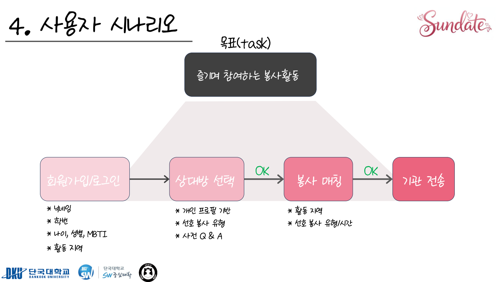

← 전체 프로젝트사용자 흐름도
서비스 개발·운영
Sun(善)-Date
봉사활동을 함께 하며 서로를 알아가는 소셜 네트워킹 서비스
봉사활동을 함께 하며 서로를 알아볼 수 있는 소셜 네트워킹 및 소개팅 서비스입니다.
기여와 역할
팀 프로젝트
결과
EASYTHON 2025 해커톤 우수상을 받았습니다.
사용 기술

EASYTHON 최종 발표자료의 사용자 시나리오입니다. 프로필 기반 상대방 선택부터 봉사 매칭과 기관 전송까지의 흐름을 담았습니다.
서비스 방향
봉사활동이라는 공동 경험을 중심으로 사용자가 서로를 알아갈 수 있는 소셜 네트워킹·소개팅 서비스를 기획했습니다.
- 봉사활동 기반 연결
- 소셜 네트워킹 서비스
구현 환경과 결과
Django, Flutter, Java를 활용한 팀 해커톤 프로젝트로 결과물을 구현했습니다.
- EASYTHON 2025 해커톤 우수상
- 프로젝트 저장소 공개
관련 자료